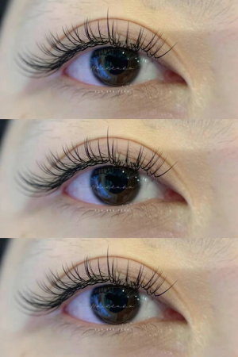
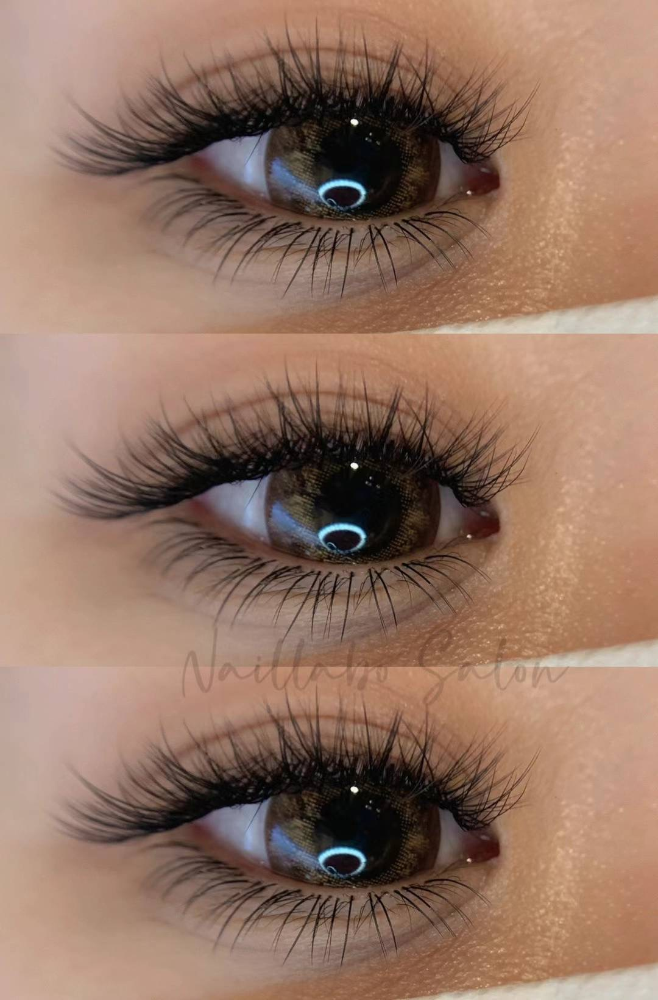
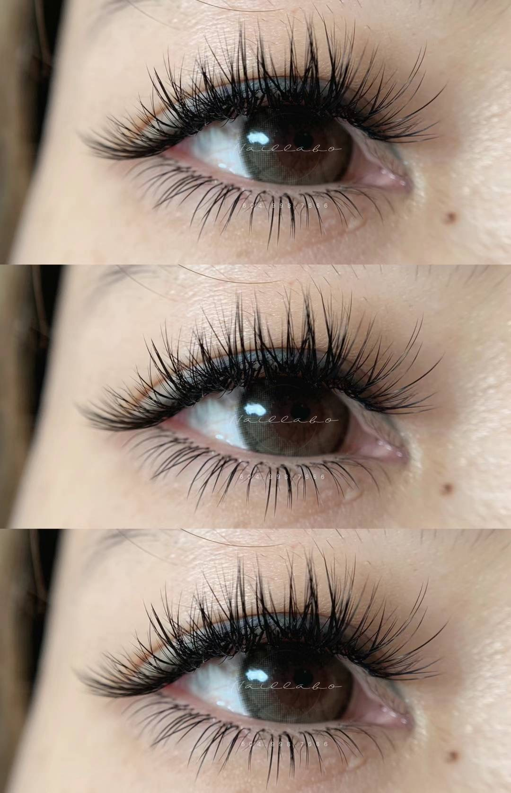
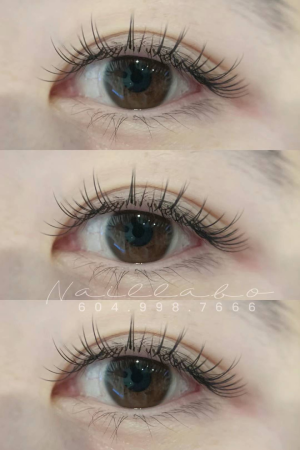

Application
1:1 technique for a refined enhancement that follows your natural lash line.
Richmond Lash Guide
Looking for exceptional eyelash extensions in Richmond, BC? Naillabo Salon, located conveniently in Aberdeen Center, offers a range of lash services designed to enhance your natural beauty and give you the captivating eyes you desire.
Eyelash extensions are a fantastic way to add length, volume, and curl to your natural lashes, eliminating the need for daily mascara and lash curlers. Whether you're preparing for a special event or simply want to simplify your daily routine, extensions provide a beautiful, effortless look that lasts for weeks.
Every eye shape and desired look is different. We tailor each lash set to your features and style, from soft everyday elegance to fuller statement lashes.




1:1 technique for a refined enhancement that follows your natural lash line.
Natural and defined, ideal for everyday wear and understated elegance.
Approximately 75 to 90 minutes, depending on your natural lash density.
Multiple lightweight extensions are applied to each natural lash for added fullness.
Dramatic, fluffy, and full, with density customized from soft volume to bolder glam.
Approximately 100 to 120 minutes for a lush, layered finish.
What sets Naillabo Salon apart for eyelash extensions in Richmond? It's our commitment to quality products and personalized service. Our lash specialists are highly trained, focusing on both artistry and precision.
We use only top-quality adhesives and premium synthetic extensions to ensure your lashes are safe, comfortable, and long-lasting. Every set of extensions is meticulously customized to complement your unique eye shape and achieve your desired aesthetic.
Eyelash extensions typically last between 2 and 4 weeks, depending on your natural lash growth cycle and how well you care for them. Regular touch-ups are recommended to maintain a full look.
It's generally not recommended to wear mascara with eyelash extensions, especially oil-based mascaras, as they can break down the adhesive. Extensions themselves provide enough volume and length that mascara is often unnecessary.
To ensure the longevity of your extensions, avoid rubbing your eyes, use oil-free makeup removers, and gently brush your lashes daily with a clean spoolie brush. Avoid excessive heat and steam immediately after application.
Ready for a customized lash set in Richmond?
Book Now